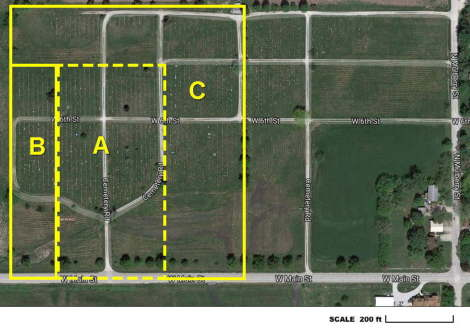
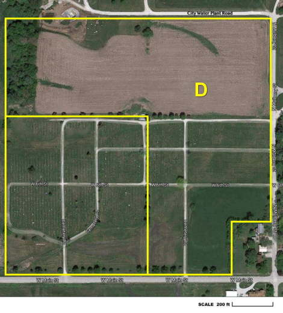
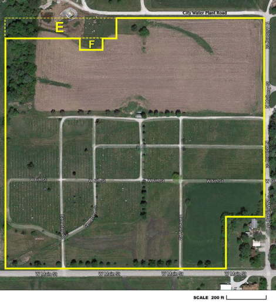
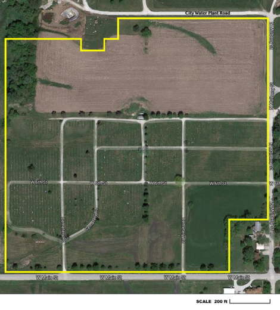

Old Cemetery Expansions thru 1922
{kind=link}

A,B,& C is the old cemetery. Area A was donated by Roselia Dancer. Her son was the first burial in 1881. The RLDS church sold area B in 1898 and C in 1922 to Rose Hill. Area A is in the E1/2 and B the W1/2 of Fayette Township's Section 3. Lamoni's 1898 plat map outlines A&B as Rose Hill, but a 1922 deed is on file transferring area A from the Dancer family. Perhaps the deed was in question or lost in the 1877 bombing of the County Courthouse. Area A was 20x40 rods and B added 8x40 rods more. With C it grew to 698'x800', but later adjusted to 698'x771.7' since the lower 28.3' is part of Main Street that the city owns. Scanned copies of the deeds can be seen online for area A (1922), area B (1898), and area C (1922).
New Cemetery Expansion in 1968
{kind=link}

In January 1968 the RLDS church deeded to the Rose Hill trustees land which expanded the cemetery eastward to Mulberry Street (excluding the home in the southeast corner) and northward to the road leading to the City's water plant. This entire area is marked as D on the map.
The eastern extension was surveyed for burial lots with survey markers buried in the ground, similar to the old part of the cemetery. A new lot identification scheme was used for the eastern half of the cemetery. It was sectioned off into blocks and each block had lot numbers starting with 1. Thus, both the Block and Lot numbers uniquely identify an individual lot. We call this eastern half of Rose Hill the "New" cemetery.
The northern extension has not been surveyed for burial lots and the Rose Hill board rents it as farmland which provides a small bit of income and saves on upkeep. This area represents Rose Hill's long term future when the cemetery runs out of room.
Scanned copies of the deed can be seen online for area D (Jan 1968).
Transfer of Property to City in 1970 and 2009
{kind=link}

In 1970 the area marked E on the map, a 548'x80' rectangular area in the northwest corner, was sold to the City of Lamoni for some of its additional Water Treatment Plant needs.
In 2009 the area marked F on the map, a 100'x50' rectangular area, was deeded over to the City of Lamoni for another of its Water Treatment Plant needs, a new Clear Well.
Scanned copies are online of the deed for area E (May 1970) and a quit-claim deed for area F (Nov 2009).
Current Property Boundaries
{kind=link}

After all of the expansions and shrinkages, this map shows the current boundaries for Lamoni Rose Hill Cemetery.